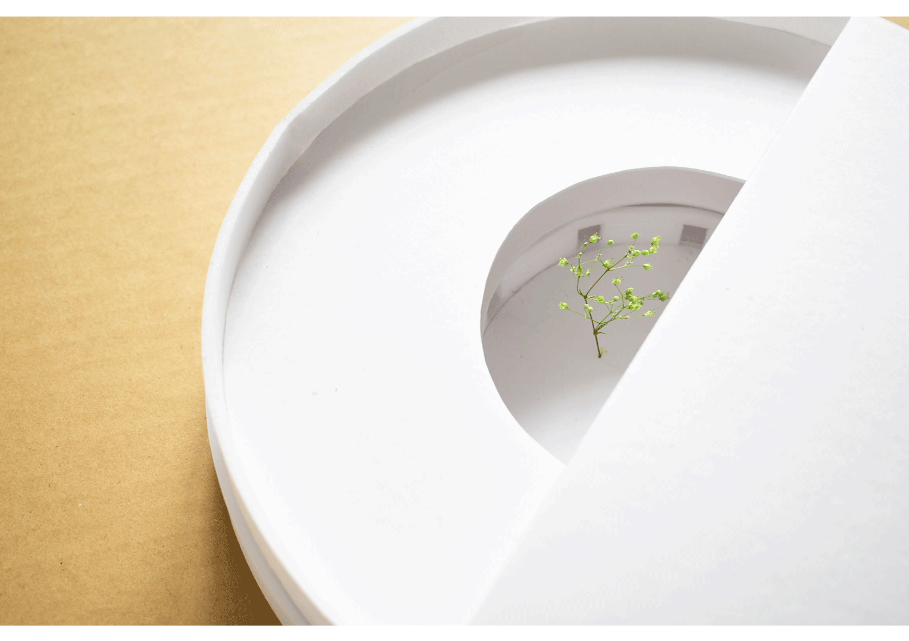
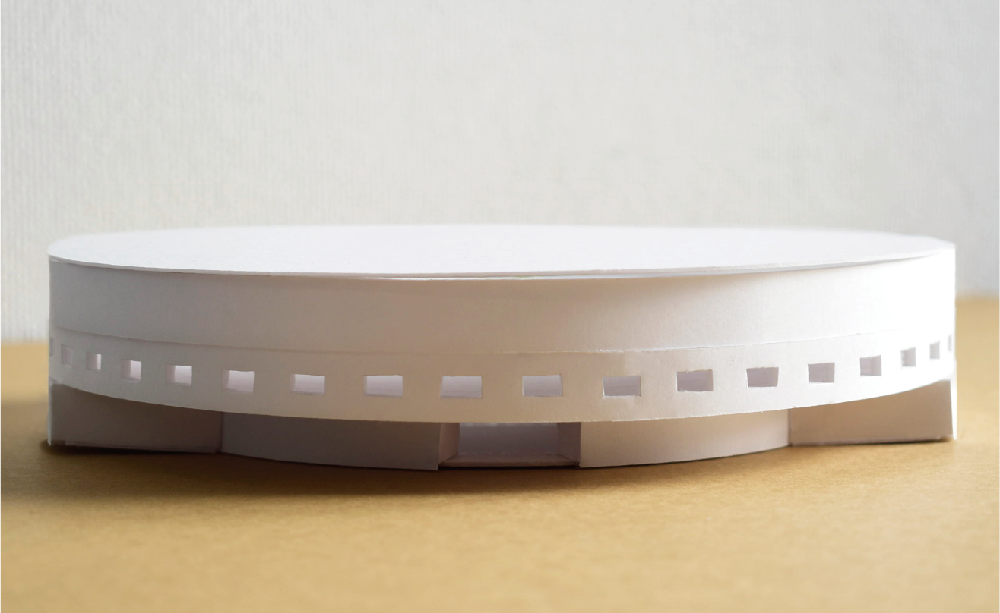
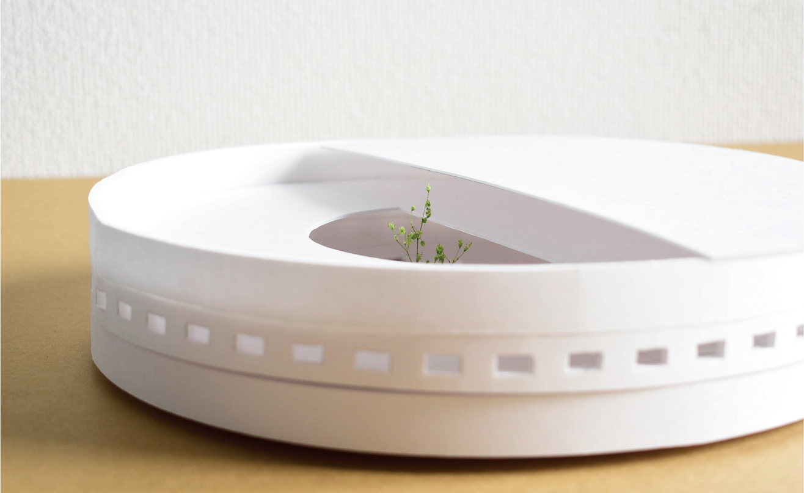
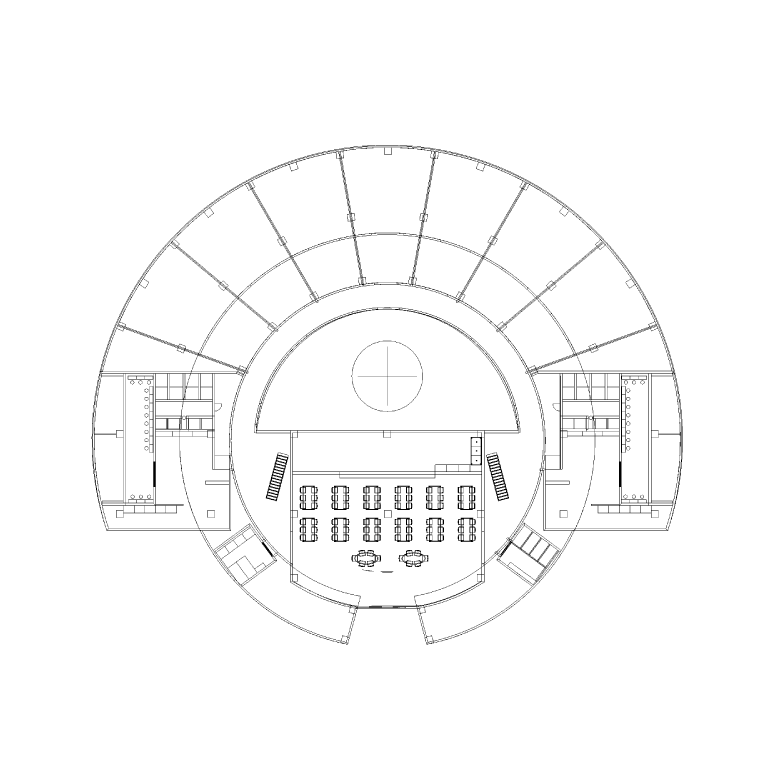
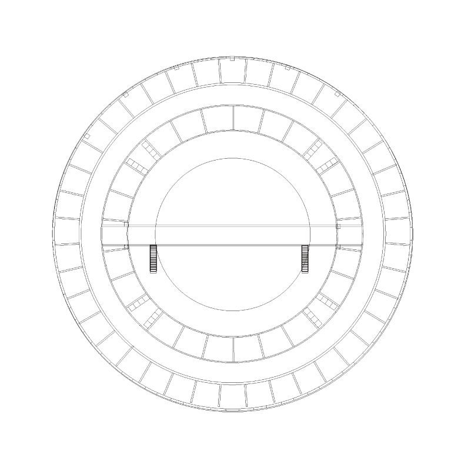

「tie」
神戸芸術工科大学 芸術工学部 プロダクト・インテリアデザイン学科 ２年 櫻井風土
家具には様々な意図があります。それは時に使い手から家具へ、家具から使い手へそして家具から家具へと影響を与えます。この作品は「移る・結ぶ」を元にその流れを家具に反映させました。
仕様：チェア・サイドテーブル
素材：ブラックウォルナット・真鍮・牛革
繋がり
このセット家具には繋がりの要素を与えました。チェアには、背もたれを裂き骨が剥き出したように真鍮板で背板をつなげ、背骨に見せることで背骨が当たらないというチェアのポイントにしました。使い手の一部を家具に反映させることで「使い手」から「家具」へ結び付けました。
二つ目に、サイドテーブルの天板に不自然な切れ込みと三本の真鍮板が入っています。川の流れと水の波・波紋を表現しましたが、それは使い手により様々な想像させ、同時に様々な使用方法を与えることで、「家具」から「使い手」へと結び付けられます。
そして２つの家具は、共通して重要なところに「真鍮」という異素材を使用しています。このように真鍮板で繋ぐというものから二つの作品が製作され、互いの作品に「家具」から「家具」へ影響された結び付き方です。
これらは、様々なものが様々なものに「移る」ことで家具と人とがより結ばれるのではないかと考えています。



